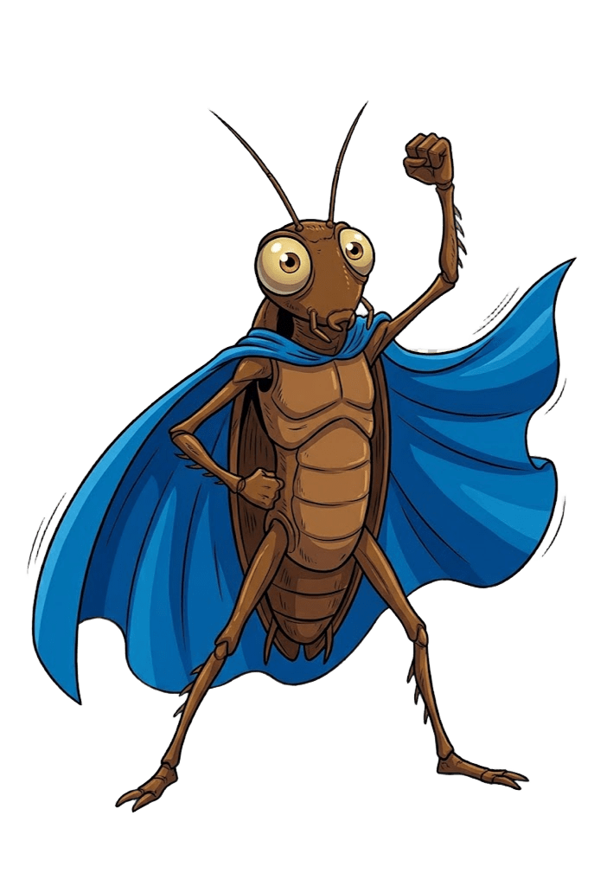

✦
✦
✦
✦
✦
✦
Lolo y la Yaya
La música de Lolo y la Yaya
✦

LAS CANCIONES
01
Por si algún día
›
02
No me aplastes, soy un héroe
›
03
Basura con estilo
›
04
Molestar por la noche, dormir todo el día
›
05
Una espía intergaláctica
›
06
La leyenda de Lolo y la Yaya
›